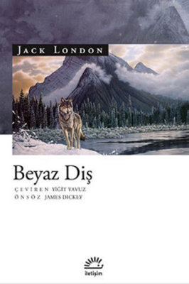

Beyaz Diş İncelemem

Jack London 1876'da San Francisco'da dünyaya gelmiş Amerikan kökenli bir yazardır. Serseri bir hayat yaşayan Jack London
kaçak istiridye avlayarak gündem olmuş farklı bir suçtan keza 30 gün suç yatmıştır. Cezaevini de daha sonradan 'Yol' adlı öyküsünde
'bir insanın düşebileceği en derin çukur' olarak nitelendirmiştir. Martin Eden, Beyaz Diş, Vahşetin Çağrısı, Demir Ökçe başta olmak
üzere 50'den fazla kitabı bulunmaktadır.
Beyaz Diş adlı öyküsünde yazar, genel çerçevede bir köpek kurt karışımı melez kurdun hikayesini anlatmaktadır. Kurttan aldığı
genlerde asi, vahşi, saldırgan özellikleri ortaya çıkarken köpekten aldığı genlerde ise uysal, sadık, kavgacı tutumu olmayan iyi bir varlıktır.
Detaya indiğimizde ise kurt bir metafor olarak kullanılmıştır. İyilik ve kötülük kavramları kitapta ele alınmıştır. Baş başa kaldığı zorluklardan
ötürü kötülükte, kurnazlıkta, saldırganlıkta son raddeye varan kurdun sevgiyle içindeki uysal, sevecen iyi tarafının ortaya çıkmasıdır. Yazar
aslında burada bir kaç soru yöneltmektedir. Kişi doğuştan iyi veya kötü olarak mı doğar? İçindeki bu benlik değiştirilebilir mi?
Kurdun bir metafor olarak öne çıkmasına şu alıntıyı örnek olarak verebilirim: ''Yavru kurt insanlar gibi düşünseydi, hayatı, doymak
bilmez bir iştahı doyurmaya çalışmak olarak özetlerdi. Dünyayı ise takip eden ve edilenin, avlayan ve avlanın, yiyen ve yem olanın bir sürü arzu
ve iştahıyla dolu düzensizlik ile şiddetin, açgözlülük ile kıyımdan ibaret bir kaosun, acımasız, plansız ve sonsuz rastlantıyla birlikte tamamen
körlemesine ve karmaşa içinde hüküm sürdüğü bir yer olarak görürdü.''(syf 84)
Değinmek istediğim bir başka ayrıntı ise ateşin bulunmasının insanlar için ne kadar önemli olduğudur. Hayvanlara karşı üstünlük kurmada
ateş gerçekten çok etkili bir silah olmuştur. Kurdun insanı bir tanrı olarak görmesinin en büyük nedenlerinden biri ateşi ve bunun gibi silahları
bir mucize olarak görmesi ve bu mucizeyi insanın kullandığını görmesi olmuştur. Tarihi süreçte de insanoğlu ateşi keşfetmeyene kadar besin zincirinde
en alt sıralarda yer alırken bu keşifle beraber basamakların zirvesine yerleşmiştir.
Kitabı tavsiye eder, iyi okumalar dilerim..
1 Yorum
Fadime Kirpi
Harika bir kitaptı👏 okuma zevki ne olursa olsun herkesin sevebileceği bir kitap